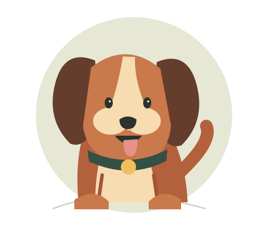

GOOD DOGS. GREAT CONNECTIONS.
Your person.
In dog form.
A hiking buddy? A little homebody? Find the kind of dog that fits the life you actually live.
Let’s find your matchSwipe, like & find your type · 6 breed profiles

a best friend, incoming.100% good companyFOLLOW YOUR HEART. WE’LL FOLLOW YOUR LEAD.
A little spark starts here.
Swipe right to like, left to pass. Your next dog learns from your choices.
Drag or swipe the photo · Or use the buttons / ← → keys
01 / A LITTLE ABOUT YOU
Start with your everyday.
No perfect answers. Just your real life.
Your lifestyle
Saved on this device- 1 Your home
- 2 Your routine
- 3 Your preferences
02 / MEET THE POSSIBILITIES
Your future plus-one.
Finish the quiz to reveal your personalized matches.
A good connection starts with you.
Tell us about your life in the three steps above.
Start your quiz ↑Scores show fit within this small educational dataset, not a probability of success. Save favorites with ♡ or choose up to 3 dogs to compare.
03 / SIDE BY SIDE
A closer look.
Activity targets and commitment levels are simplified project estimates for adult dogs, not prescribed care requirements.
A THOUGHTFUL START, NOT A FINAL ANSWER
Find the connection.
Then meet the individual.
01 / Your life leads.
We compare your routine with six simplified breed profiles. Change any answer to watch the rankings shift.
02 / The reasons are visible.
Scores combine activity, enrichment, space, size, experience, and coat care. Open “How scoring works” for the weights.
03 / Make it personal.
Meet dogs through a shelter or responsible breeder. Ask about health, temperament, care needs, and your household.
How scoring works & sources
Each of seven dimensions scores from 0 to 100. Default weights are activity 25, enrichment 15, space 10, size 15, grooming 15, shedding 10, and experience 10. Your selected priority doubles the relevant weights, then the total is normalized. Short exercise time or limited grooming reduces fit; extra exercise capacity does not penalize a dog. Long days away without support cap all scores at 55. Unresolved long-day care plans are clearly flagged.
Numerical profiles are authored teaching estimates, not AKC ratings. General breed descriptions are informed by the American Kennel Club: Havanese, Whippet, Labrador Retriever, Standard Poodle, Border Collie, and Greyhound. Reviewed October 20, 2026.
Dog photographs from Wikimedia Commons; displayed crops may differ from originals:
- A havanese dog in Finland.jpg — ThePointyHatGnome · CC0.
- Fireworks Whippets.jpg — Winky, Vancouver, Canada · CC BY 2.0.
- DSC09611a Search and Rescue Dog, Austrian Red Cross Perchtoldsdorf, 2024-10.jpg — Aciarium · CC BY 4.0.
- Border Collie with Heterochromia 2.jpg — 7575u · CC BY-SA 4.0.
- Greyhound Racing 2 amk.jpg — AngMoKio · CC BY-SA 3.0.
- Standard Poodle portrait.jpg — Flickr user John Leslie · CC BY 2.0.


Discovery order blends lifestyle fit (65%), coat preference (20%), and learned preferences (15%). Likes favor similar coat texture, size, and activity; passes favor different traits. Learning strengthens over the first three choices. The displayed lifestyle score stays separate. All six dogs are shown at most once per round; you can undo or restart. Restarting clears swipe learning but keeps saved favorites.